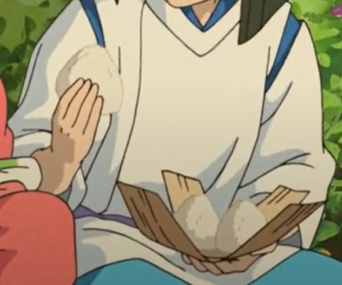

When your parents turn into pigs, these little rice friends bring courage. Inspired by Spirited Away. üê∑‚ú®
Whether you’re trapped in the realm of spirits or your parents have just turned into pigs, this is the go-to snack for regaining your strength. Onigiri is very versatile and can be adapted to your favorite flavor combinations. This is also a great way to use leftover or pantry ingredients. You can choose between a sweet and savory Chinese-style roasted pork filling, spicy tuna mayo, or the classic pickled plum filling. You’ll surely be able to handle anything if you eat all three! Yield: 3 to 4 servings Prep time: 22 minutes + 8 hours marinating Cook time: 40 minutes
Ingredients
Char Siu Filling:
¼ cup hoisin sauce
⅓ cup brown sugar
⅓ cup Shaoxing rice wine vinegar
⅓ cup + 2 tbsp syrup or honey
1 tsp salt
2 tbsp dark soy sauce
1½ tbsp oyster sauce
1 tsp Chinese five-spice powder
3–4 cloves garlic, minced
1 tsp sesame oil
1 block red bean curd
2–3 drops red food coloring
2½ lb pork loin/neck, sliced into 3 pieces
Salt and pepper, to taste
Spicy Tuna Mayo:
6 oz canned tuna, drained
¼ tsp togarashi
¼ cup Kewpie mayo
1 green onion, sliced
2 tbsp mixed sesame seeds
Umeboshi Filling:
1 Japanese umeboshi, pitted
For Onigiri:
2½ cups cooked jasmine rice
1 tsp salt
1 sheet nori, cut into strips

üçô Comfort in every bite ‚Äî Chihiro would approve.
Instructions
To make the char siu, combine all the ingredients (except the pork) in a large bowl and mix until well combined. Place the pork in the marinade, ensuring that it is fully submerged. Let it rest in the fridge for 8 hours or overnight.
Preheat the oven to 400°F. Pour boiling water into the bottom of the roasting pan and place a rack on top. Place the pork on the rack where it is not in direct contact with the water, and roast for 20 minutes.
Pour the remaining marinade into a small pot over medium heat. Bring the marinade to a boil and simmer for 5 minutes, until the sauce has slightly thickened. Divide the marinade between 2 bowls—1 will be used for basting and the other for serving.
Remove the pork from the oven and baste both sides with the cooked marinade. Return to the oven and roast for 10 more minutes. Drizzle a small amount of honey (around 2 tablespoons) over the pork and roast until the honey starts to caramelize, about 2 to 5 minutes.
Remove the pork from the oven and let it rest for 10 minutes before slicing. Dice it into bite-size pieces and set it aside. You will have leftover char siu, which goes amazingly well with ramen or just plain rice.
For the spicy tuna mayo filling, combine all the ingredients in a medium bowl, mix, and set aside.
In a large bowl, season the cooked jasmine rice with salt and mix until it is well incorporated. Use a rice paddle to keep from breaking up the rice too.
Dip your hands in a bowl of water to help prevent the rice from sticking. Roll roughly ½ cup of rice into a ball. Gently flatten it while creating a well in the center. Add 1 tablespoon of the char siu filling and ½ teaspoon of the marinade to the center of the rice.
Using your hands, mold the rice around the well to cover the filling completely, then gently shape the rice ball into a wide triangular shape using the palm of your hands, rotating the rice ball as you go. Try not to squeeze the rice too hard, as you do not want the rice to break up. Finally, place a strip of nori underneath the onigiri (shiny side facing toward you) and fold it up toward the middle of the onigiri. Set aside.
Repeat the same onigiri shaping technique with the rest of the fillings. For the spicy tuna onigiri, use 1 tablespoon of the tuna filling. You may also roll the sides of the onigiri in a mixture of black and white sesame seeds, and wrap a strip of nori underneath. For the umeboshi onigiri, I tried to stick close to the original film when Chihiro was encouraged to eat the onigiri to regain her strength. This onigiri is left plain with 1 umeboshi as the filling.
Serve warm or at room temperature.
Tips
If you are uncomfortable shaping the onigiri with your hands, I recommend placing some plastic wrap on a table and place 2 to 3 tablespoons of rice on the plastic wrap. Add 1 tablespoon of your desired filling in the middle of the rice bed and add an additional 2 to 3 tablespoons of rice on top, completely covering the filling. Lift the edges of the plastic wrap toward the middle while forming a rice ball. Gently shape the rice ball into a triangle using your hands. Take the plastic wrap off and set the onigiri aside. Repeat for the rest.
Cover the onigiri as the rice tends to get hard when exposed to air.